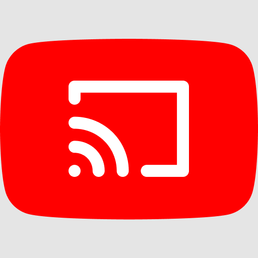

Youtube Cast Receiver
Watch YouTube on this computer, picked from your phone
Waiting for a connection
This computer is offline right now. Once it is back on the network, choose Reload and the YouTube TV interface opens here in fullscreen.
ReloadOpening youtube.com/tv
Hold on a moment while the TV interface loads.
Cast from your phone
- Open the YouTube app on your phone.
- Tap your profile picture, then Settings, then Watch on TV.
- Pick Enter TV code and type the code shown on this screen.